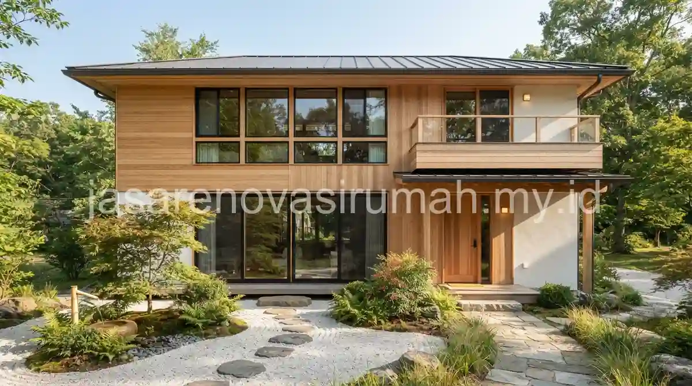
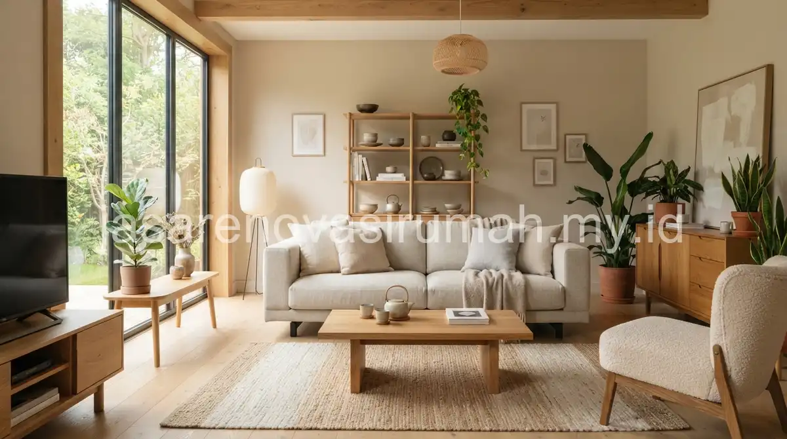

Desain rumah Japandi memadukan kesederhanaan gaya Jepang dengan kehangatan gaya Skandinavia, ditandai dengan material kayu natural, warna netral hangat, dan ruang yang lapang tanpa dekorasi berlebihan.
Gaya ini cocok bagi pemilik rumah yang menginginkan suasana tenang dan hangat, namun tetap fungsional dan mudah dirawat dalam kesehariannya.
Apa Itu Gaya Japandi dan Apa Ciri Khasnya?
Japandi adalah perpaduan filosofi desain Jepang yang menekankan kesederhanaan dan ketenangan, dengan gaya Skandinavia yang mengutamakan fungsi dan kehangatan material alami.
Beberapa ciri khas yang paling mudah dikenali pada gaya Japandi:
- Garis desain bersih tanpa ornamen berlebihan, mirip prinsip minimalis pada umumnya.
- Dominasi material kayu natural dengan warna terang hingga medium.
- Penggunaan elemen alami seperti tanaman, batu, dan tekstil bertekstur kasar seperti linen.
- Pencahayaan alami yang dimaksimalkan lewat jendela besar dan bukaan langit-langit.
Prinsip kesederhanaan ini memiliki kemiripan dengan desain rumah minimalis modern pada umumnya, namun Japandi lebih menonjolkan kehangatan material kayu dibanding kesan dingin dari beton dan kaca yang sering mendominasi gaya minimalis modern konvensional.
Material dan Warna Apa yang Identik dengan Gaya Japandi?
Material kayu natural, terutama kayu jenis oak atau pinus dengan finishing minim, adalah elemen utama yang paling identik dengan gaya Japandi.
Berikut kombinasi material dan warna yang umum diterapkan:
| Elemen | Material/Warna Populer | Karakteristik |
|---|---|---|
| Lantai | Kayu natural atau vinyl motif kayu | Hangat secara visual, nyaman dipijak |
| Dinding | Cat warna krem, putih gading, atau abu muda | Netral, memantulkan cahaya dengan lembut |
| Furnitur | Kayu solid dengan garis sederhana | Tahan lama, minim ukiran dekoratif |
| Tekstil | Linen, katun alami warna natural | Menambah tekstur tanpa motif ramai |
Kombinasi ini membuat rumah bergaya Japandi terasa hangat namun tetap terlihat rapi dan tidak berlebihan, cocok diterapkan baik pada rumah baru maupun hasil renovasi ruangan tertentu.
Bagaimana Menerapkan Gaya Japandi pada Rumah Berukuran Kecil?
Kunci menerapkan Japandi pada rumah kecil adalah membatasi jumlah furnitur, memaksimalkan cahaya alami, dan menjaga konsistensi palet warna netral di seluruh ruangan.

Beberapa langkah praktis yang bisa diterapkan:
- Pilih furnitur multifungsi dengan desain ramping agar tidak memakan banyak ruang.
- Gunakan tirai tipis berwarna netral untuk memaksimalkan cahaya alami tanpa mengorbankan privasi.
- Batasi dekorasi hanya pada satu atau dua titik fokus, seperti tanaman hias atau lukisan minimalis.
- Pertahankan konsistensi warna kayu dan netral di seluruh ruangan agar rumah terasa menyatu meski berukuran kecil.
Bagi pemilik rumah yang ingin menerapkan gaya ini secara menyeluruh sejak tahap perencanaan, konsultasi dengan jasa arsitek sangat disarankan agar orientasi cahaya dan pemilihan material sudah dipertimbangkan sejak desain awal, bukan hanya pada tahap finishing interior.
Kesalahan Umum Saat Menerapkan Gaya Japandi
Kesalahan yang paling sering terjadi adalah mencampur terlalu banyak warna kayu yang berbeda tone dalam satu ruangan, sehingga kesan hangat dan menyatu yang menjadi ciri khas Japandi justru hilang.
Kesalahan lain yang perlu dihindari:
- Menambahkan terlalu banyak dekorasi kecil yang membuat ruangan terlihat penuh.
- Memilih furnitur dengan warna terlalu gelap yang bertentangan dengan prinsip kehangatan dan kelapangan gaya Japandi.
- Mengabaikan pencahayaan alami demi menata furnitur sedekat mungkin ke dinding.
Pada akhirnya, desain rumah Japandi yang baik mengutamakan keseimbangan antara kesederhanaan dan kehangatan, bukan sekadar mengikuti tren warna kayu tertentu. Konsultasikan konsep ini dengan tim arsitek kami dan lihat referensi lebih lanjut pada portofolio kami sebelum menentukan konsep akhir rumah Anda.